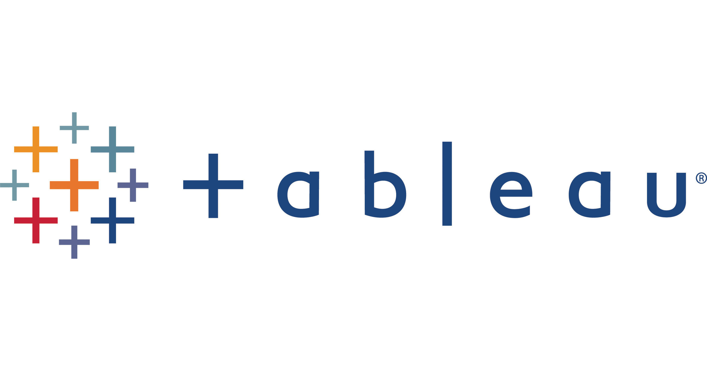

May, 2022
Analyze the used devices dataset, build a model which will help develop a dynamic pricing strategy for used and refurbished devices, and identify factors that significantly influence the price.
Skills and Tools: EDA, Linear Regression, Linear Regression assumptions, Business insights and recommendations.


This project used statistical analysis, a/b testing, and visualization to decide whether the new landing page of an online news portal is effective enough to gather new subscribers or not.
Skills and Tools: Hypothesis Testing, a/b testing, Data Visualization, Statistical Inference.

The food aggregator company has stored the data of the different orders made by the registered customers in their online portal. They want to analyze the data to draw some actionable insights for the business.
Skills and Tools: Exploratory Data Analysis (Variable Identification, Univariate analysis, Bi-Variate analysis).

Data exploration of global COVID-19 cases.
Skills and Tools: Joins, CTE's, Temp Tables, Windows Functions, Aggregate Functions, Creating Views, Converting Data Types.

Data exploration of simulated employees dataset.
Skills and Tools: Group by, Joins, Insert, Aggregate Functions.

My tableau public page includes all of my projects. Each project uses different data visulaization techniques to gain insights into the data.